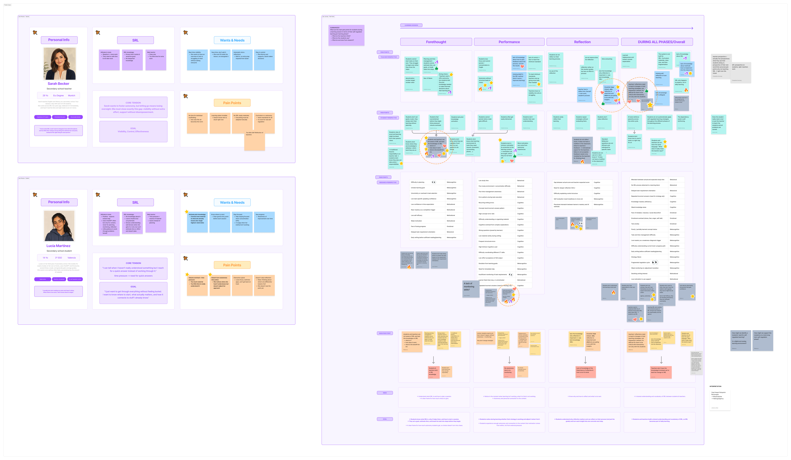
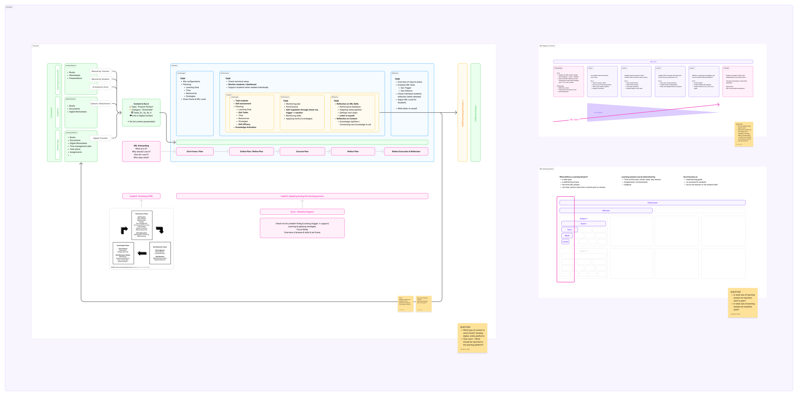
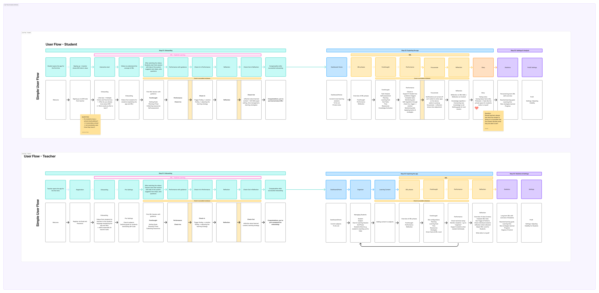

ELLA is an international EU research project investigating how self-regulated learning can be sustainably embedded in everyday classroom instruction.

Teachers across Europe want to bring self-regulated learning into the classroom, but most have no time to read into the methods, let alone apply them. Students, in turn, are rarely even aware of SRL as a concept. Individual support stays out of reach for both sides.

Teachers repeatedly said they had no capacity for additional work. That became a research question in itself: not whether they wanted SRL, but what was actually stopping it. To find out, the ELLA team analysed 122 research papers, ran a student survey, and brought together 16 learning experts from across Europe. Students, meanwhile, had no framework for SRL at all.

Research findings were consolidated and prioritized in workshops with the expert group. We built personas for teachers and students and mapped their pain points along a learning session. After exploring the real needs behind, I guided the ideation session with the expert group and later dived deeper into the concept.

Solution approaches were evaluated in regular feedback rounds with the experts, who also contributed further ideas for different use cases and user groups. I created different schemas for better understanding how the solution fits into their curriculum, currently used systems, the different types of learning sessions, planning structures and how the students and teachers support play together.

The first prototype is currently being evaluated in user tests with teachers and students. The expert community and participating schools across different countries have responded positively, and the project is committed to long-term continuation.
ELLA is still evolving, but the direction is clear and well-received. With €400,000 in EU funding and schools from multiple countries involved from day one, the project is built for real deployment. A long-term commitment from all partners confirms it.

HMI for Driving Simulation

Mobile-First Car UX

Little Food Fighters